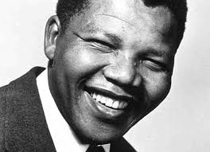

(/mænˈdɛlə/;[1] 18 July 1918 – 5 December 2013) was a South African anti-apartheid revolutionary, politician, and philanthropist, who served as President of South Africa from 1994 to 1999. He was the country's first black chief executive, and the first elected in a fully representative democratic election. His government focused on dismantling the legacy of apartheid through tackling institutionalised racism and fostering racial reconciliation. Politically an African nationalist and democratic socialist, he served as President of the African National Congress (ANC) party from 1991 to 1997. A Xhosa born to the Thembu royal family, Mandela attended Fort Hare University and the University of Witwatersrand, where he studied law. Living in Johannesburg, he became involved in anti-colonial politics, joining the ANC and becoming a founding member of its Youth League. After the Afrikaner minority government of the National Party established apartheid – a system of racial segregation that privileged whites – in 1948, he rose to prominence in the ANC's 1952 anti-apartheid Defiance Campaign, was appointed superintendent of the organisation's Transvaal chapter and presided over the 1955 Congress of the People. Working as a lawyer, he was repeatedly arrested for seditious activities and, with the ANC leadership, was unsuccessfully prosecuted in the Treason Trial from 1956 to 1961. Influenced by Marxism, he secretly joined the South African Communist Party (SACP). Although initially committed to non-violent protest, in association with the SACP he co-founded the militant Umkhonto we Sizwe in 1961, leading a sabotage campaign against the government. In 1962, he was arrested, convicted of conspiracy to overthrow the state, and sentenced to life imprisonment in the Rivonia Trial. Mandela served 27 years in prison, initially on Robben Island, and later in Pollsmoor Prison and Victor Verster Prison. An international campaign lobbied for his release, which was granted in 1990 amid escalating civil strife. Mandela joined negotiations with President F. W. de Klerk to abolish apartheid and establish multiracial elections in 1994, in which he led the ANC to victory and became South Africa's first black president. He published his autobiography in 1995. Leading South Africa's Government of National Unity, which promulgated a new constitution, Mandela also created the Truth and Reconciliation Commission to investigate past human rights abuses. While continuing with the former government's economic liberalism, his administration introduced measures to encourage land reform, combat poverty, and expand healthcare services. Internationally, he acted as mediator in the Pan Am Flight 103 bombing trial, oversaw military intervention in Lesotho, and served as Secretary General of the Non-Aligned Movement from 1998–99. Declining a second presidential term, he was succeeded by his deputy, Thabo Mbeki. Mandela became an elder statesman, focusing on charitable work in combating poverty and HIV/AIDS through the Nelson Mandela Foundation. Mandela was a controversial figure for much of his life. Denounced as a communist terrorist by critics, he faced particular opposition from supporters of apartheid. Conversely, he gained international acclaim for his activism, having received more than 250 honours, including the 1993 Nobel Peace Prize, the US Presidential Medal of Freedom, and the Soviet Lenin Peace Prize. He is held in deep respect within South Africa, where he is often referred to by his Xhosa clan name, Madiba, or as Tata ("Father"), and described as the "Father of the Nation".
(18/07/1918 to 5/12/2013)
Childhood:
Mandela was born on 18 July 1918 in the village of Mvezo in Umtata,
then a part of South Africa's Cape Province.[2] Given the forename Rolihlahla,
a Xhosa term colloquially meaning "troublemaker",[3] in later years
he became known by his clan name, Madiba.[4]
His patrilineal great-grandfather, Ngubengcuka,
was ruler of the Thembu people in the Transkeian
Territories of South Africa's modern Eastern Cape
province.[5] One of this king's sons, named Mandela,
became Nelson's grandfather and the source of his surname.
[6] Because Mandela was only the king's child by a wife of the Ixhiba clan,
a so-called "Left-Hand House", the descendants of his cadet branch of the royal family were morganatic, ineligible to inherit the throne but recognised as hereditary royal councillors.[7] His father, Gadla Henry Mphakanyiswa, was a local chief and councillor to the monarch; he had been appointed to the position in 1915, after his predecessor was accused of corruption by a governing white magistrate.[8] In 1926 Gadla was also sacked for corruption, but Nelson was told that he had lost his job for standing up to the magistrate's unreasonable demands.[9] A devotee of the god Qamata,[10] Gadla was a polygamist, having four wives, four sons and nine daughters, who lived in different villages. Nelson's mother was Gadla's third wife, Nosekeni Fanny, who was daughter of Nkedama of the Right Hand House and a member of the amaMpemvu clan of Xhosa.